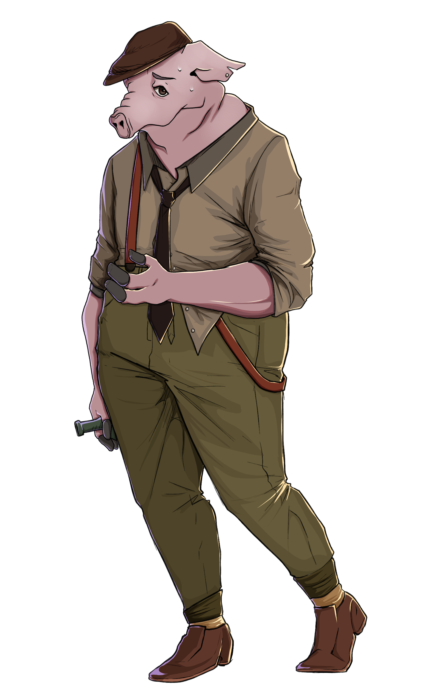
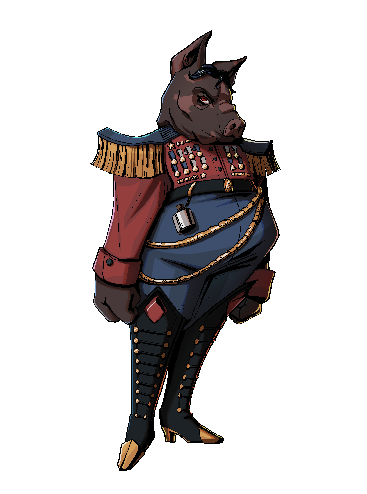
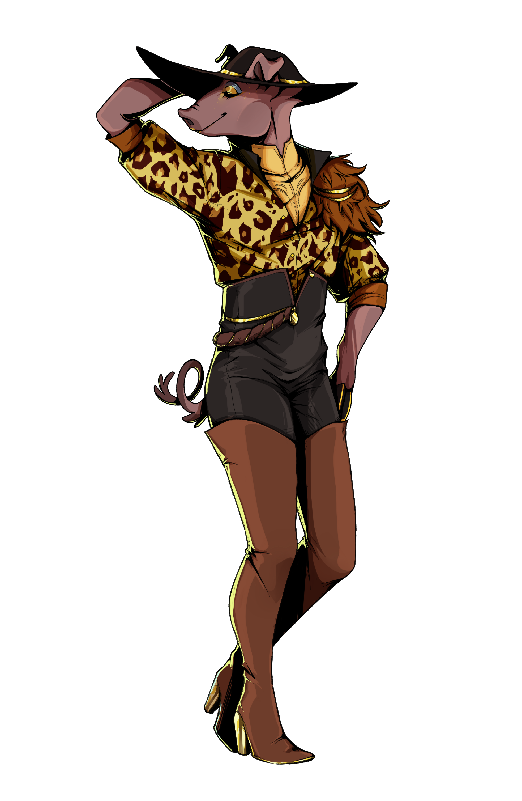
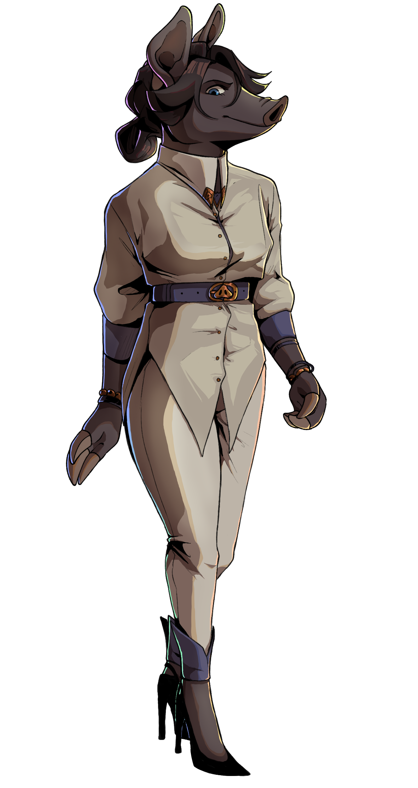

The Piggy Experience
How much would you be willing to lie if it made you richer? In Greedy Piggies, you can put that to the test, a deck of cards is all that stands between you and endless wealth. Play it safe and slowly work your way up with honesty, or increase your payouts by lying your way to the top. Money’s useless without something to purchase, so why not stop by the shop to grab yourself some abilities to give you the edge, or maybe invest in a company that could benefit you handsomely. Want to pig out with your friends? Grab up to 4 friends and test your trust by throwing each other into the meat grinder of debt. Will you climb to the top of the economic food chain, or will you be slow roasted into bankruptcy?
A World of Greed
The Old money has gathered our players to her personal vault, nested on the top floor of her prestigious penthouse. She has no plans to open it, she has simply designed the room to have her infinite wealth as a decoration as the game unfolds. Every inch of the room is priceless, and only the richest have the honour of laying their eyes on its magnificence. Dress your best, because you sit at this table not as a pig, but as royalty.
Meet the Piggies
The Old Money
The NPC
A woman who believes wealth is a birthright. The old money has cash to spare and will use it how she pleases. She has built up her reputation and gathered connections, and has brought together three of the wealthiest people she knows, and one who has nothing, just to watch him struggle. Money is merely a means to an end, and after her life as a businesswoman, watching others fight over it will prove to be a delightful spot of entertainment. She is calm and collected, but authoritative and stern, keen to watch a bunch of fragile piggies fight over a meaningless sum of money.

The nobody
An underestimated outsider
A pig with nothing to his name, the Nobody is the only pig sitting at the table with a sense of morality. He's not above anyone, he doesn't look down on anyone, he doesn't have the kind of status that makes him as high and mighty as the others at the table, he's just a chill guy. He was brought in by the Old money after the spontanious passing of the Chancellor of Saustria, and after winning a mysterious street raffle shortly after. She wanted to see how someone so insignificant would handle more money that he's ever seen against a group of billionaires, and has given him the money to do so. With supposedly nothing to lose and everything to gain, he's giving it his best shot!

The Dictator
The hot head
A heartless, self-centred and war-crazed old piggy, the Dictator strikes fear into his enemies with a commanding presence. He rules with an iron fist, and carries his philosophies and mannerisms to the table, treating others as pawns to fuel his agenda, and getting uncontrollably angry when something doesn't go his way.

The Nepo piglet
Made from daddys money
Having never worked a day in his life, the Nepo-piggy is a self obsessed and dissmissive little piggy, who has never known a life where he wasn't swimming in cash, spitting on the common man who lives without. He sits at the table riding off of the success of his father, and will throw as much of his money around as he damn well pleases. Even if he loses, he doesn't care, because he'll always have Daddy's wallet to fall back on.

The Entrepreneur
Smug and out of touch
A self-made billionaire, the Entrepreneur has climbed her way to the top of the food chain, becoming out of touch with the rest of world. However, deep down she is still the nerd she once was, and constantly feels the need to prove she is, in fact, not out of touch. This leads to corperatised quirkiness to try and make everyone think she's the coolest piggy in the pen, but in reality, everyone just finds her obnoxious and annoying.